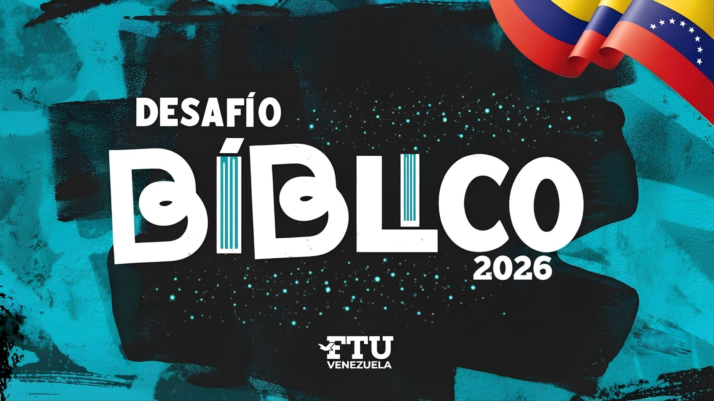

DESAFÍO BÍBLICO

EL GRAN DESAFÍO DE LAS ESCRITURAS
DESAFÍOBÍBLICOFTU VENEZUELA · 2026
15 preguntas. 4 opciones. Un camino hasta el millón de puntos. ¿Cuánto conoces de la Palabra de Dios?
GRAN PREMIO1.000.000puntos bíblicos
🏆
15 preguntas3 comodines2 niveles seguros
“Procura con diligencia presentarte a Dios aprobado.” 2 Timoteo 2:15
DESAFÍO BÍBLICO FTU 2026
✦ 0
COMODINES
🏆
PARTIDA FINALIZADA
¡Buen trabajo!
0PUNTOS CONSEGUIDOS